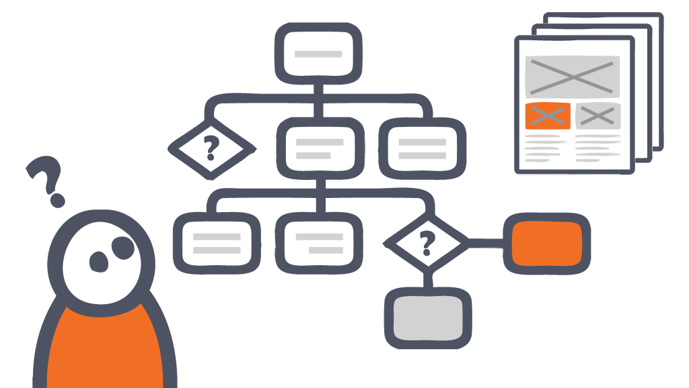
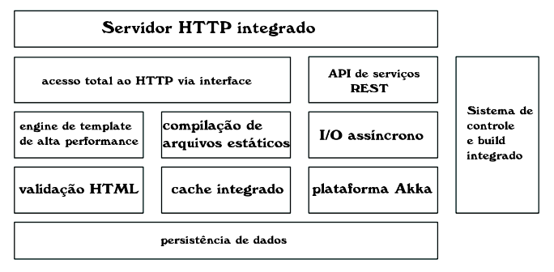
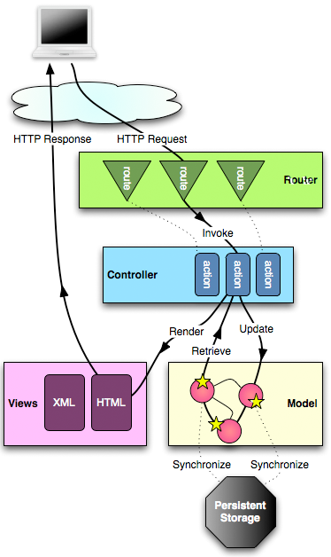
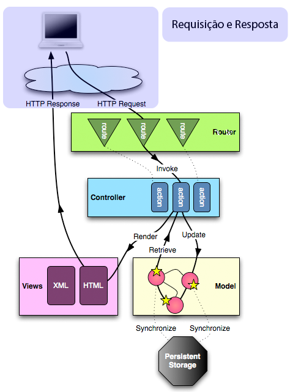
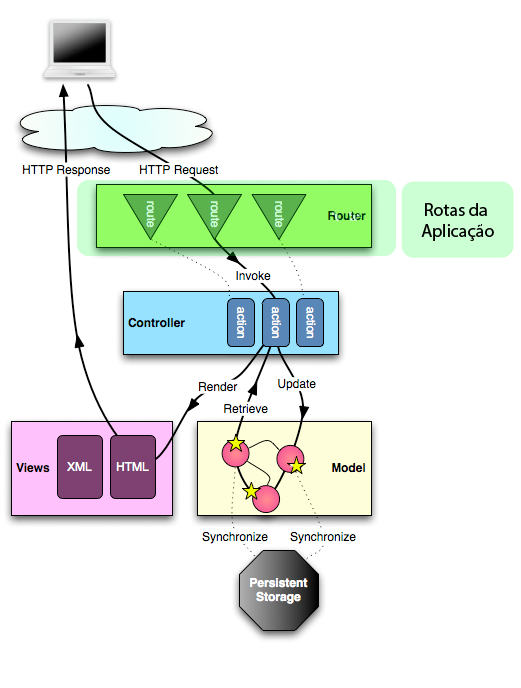
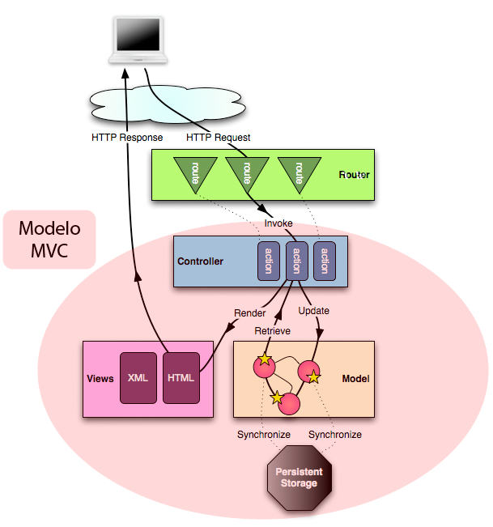
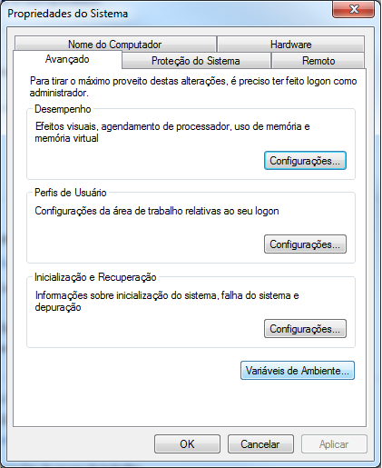
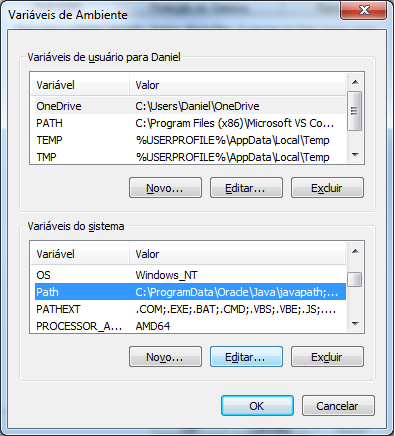
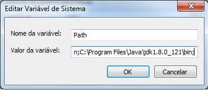

Criando Aplicações Web
com o Play Framework
Daniel Gonçalves
Desenvolvedor Java Web
Atualmente trabalha na Universidade Federal do ABC, como Analista de TI.
Iniciando mestrado em Ciência da Computação.
O que é o Play ?
É um framework para desenvolvimento Web emScala, e também em Java. Diferentemente de outros frameworks Java EE, ele não utiliza servlets.
Outra ponto diferente é o uso de um servidor HTTP embutido, o Netty.
Algumas vantagens:
- Aumento considerável da produtividade: Toda a mudança é compilada em tempo real. Então você altera algo no código, e assim que salvar poderá ver a atualização sem a necessidade de reiniciar a aplicação.
Algumas vantagens:
- Manipulação de erros diferenciado:O Play! tem um tratamento de erros fácil de correção no modo de desenvolvimento: tanto para erros de compilação como tempo de execução. É mostrado o caminho do arquivo, o número da linha e o código através do navegador. Não é mais necessário acessar arquivos de logs aleatórios (como por exemplo o do Tomcat).
Algumas vantagens:
- Suporte para tecnologias como: REST, JSON/XML, ORM (mapeamento objeto-relacional), suporte NoSQL e muitos outros modelos compatíveis.
Algumas vantagens:
- Bibliotecas para uso de programação concorrente (Akka)
|  | Arquitetura do Play Framework |
Stack (Core)
Arquitetura
- MVC
- Netty - Servidor Web integrado sem uso de servlets
- Construido na linguagem Scala
Ciclo de Vida da Requisição
Ciclo de Vida da Requisição
Ciclo de Vida da Requisição
Ciclo de Vida da Requisição
Estrutura de Projeto
└-app -------------> código fonte
| └-controllers --> controles de requisições
| └-views --------> arquivos de template para renderizar html
| └-models -------> camada que representa os dados
└-conf ------------> arquivos de configuração
└-project ---------> definição de projeto sbt
└-public ----------> pasta contendo recursos estáticos
| └-images-------> imagens
| └-javascripts--> arquivos de javascript
| └-stylesheets--> arquivos de css
└-test ------------> código fonte de casos de testes
Instalação
Baixe o Activator na página do Play Framework, aqui.
Depois configure as variáveis de ambiente, de acordo com o Sistema Operacional
Linux
Adicione no arquivo .bashrc ou .profile:
Adicione a permissão de execução:
export PATH=/pasta/activator-x.x.x/bin:$PATH
chmod u+x /pasta/activator-x.x.x/bin/activator
Mac
Adicione no arquivo .bash_profile:
export PATH=/pasta/activator-x.x.x/bin:$PATH
Windows
| 1. | 2. | 3. Adicione o caminho C:\pasta\activator-x.x.x\bin |
|  |  |  |
Criando um novo projeto |
Criar novo projeto:
Entrar na pasta do projeto:
Subir o projeto no terminal:
Com build automático:
Alterando a porta:
activator new [nome-do-projeto]
cd nome-do-projeto
nome-do-projeto$ activator
[nome-do-projeto] ~run
[nome-do-projeto] ~run -Dhttp.port=8080
Importando para IDE
- IntelliJ Community
- Eclipse
Eclipse
1. Para configurar o projeto Eclipse, precisamos primeiro adicionar um plugin. Abra o arquivo project/plugins.sbt e adicione após a última linha:
addSbtPlugin("com.typesafe.sbteclipse" % "sbteclipse-plugin" % "4.0.0")
2. Abra também o arquivo build.sbt que fica na raiz do projeto e adicione:
EclipseKeys.preTasks := Seq(compile in Compile)
EclipseKeys.projectFlavor := EclipseProjectFlavor.Java
EclipseKeys.createSrc := EclipseCreateSrc.ValueSet(EclipseCreateSrc.ManagedClasses, EclipseCreateSrc.ManagedResources)
Codando ...

Hello World
controllers/HomeController.java
public Result helloWorld(){
return ok(views.html.hello.render("Hello World"));
}views/hello.scala.html
@(mensagem: String)
@main("Hello World Title"){
@mensagem
}
Hello World
conf/routes
GET /hello controllers.HomeController.helloWorld() Passando parâmetros via URL:
GET /hello controllers.HomeController.hello(parametro ?= "")ou também:
GET /hello controllers.HomeController.hello(parametro: String)Projeto Agenda

Repositório: https://github.com/danielgoncalvesti/phonebook-play-java-nodatabase
Link: playagenda.herokuapp.com
Classe Contato
package models;
import static play.data.validation.Constraints.*;
public class Contato{
public Long id;
@Required
public String nome;
@Required
public String telefone;
}
Classe ContatoDao
package models;
import java.util.ArrayList;
import java.util.List;
import java.util.Map;
import java.util.concurrent.ConcurrentHashMap;
import java.util.concurrent.atomic.AtomicLong;
public class ContatoDao {
private static Map contatos = new ConcurrentHashMap();
private static AtomicLong uuid = new AtomicLong();
public static Contato findById(long id) {
return contatos.get(id);
}
public static List findByName(String filter){
List result = new ArrayList();
for (Contato contato: contatos.values()){
if (contato.nome.toLowerCase().toLowerCase().contains(filter.toLowerCase())){
result.add(contato);
}
}
return result;
}
public static List findAll(){
List result = new ArrayList();
for (Contato contato: contatos.values()){
result.add(contato);
}
return result;
//return new ArrayList(contatos.values());
}
public static void save(Contato contato) {
if (contato.id == null) {
contato.id = uuid.incrementAndGet();
}
contatos.put(contato.id, contato);
}
public static void delete(long id) {
contatos.remove(id);
}
}
Criando Serviços
public Result apiAll(String filter){
List contatos = models.ContatoHelper.findAll();
return ok(Json.toJson(contatos));
} Links
Publicando o Projeto
Configuração de Tema
Black (default) -
White -
League -
Sky -
Beige -
Simple
Serif -
Blood -
Night -
Moon -
Solarized